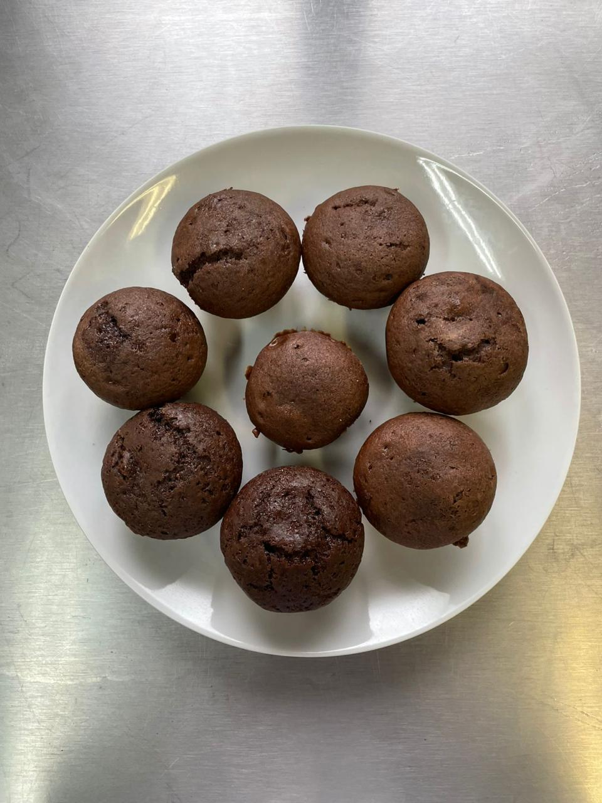

- 4 ovos;
- 2 potes de iogurte natural de 170g;
- 100ml de óleo;
- 200g de açúcar;
- 400g de farinha de trigo;
- 1 colher de sopa de fermento em pó.
Modo de preparo: Misture todos os ingredientes, exceto o fermento, numa tigela e mexa com uma colher; Adicione o fermento na massa;
Divida a massa nas formas de cupcake, leve ao forno pré aquecido a 180°graus e deixe por 30min ou até a superfície estar dourada; Espere esfriar para saborear o seu bolinho.
Voltar